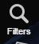
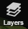

The data access services are the main functionalities of ngeo. They consist in :
catalogue searching using dataset geo-temporal criteria and/or dataset inherent criteria
retrieving products metadata and data
submitting data access requests
visualizing and manipulating data on the map.
The first and necessary step to make a catalogue search is to
choose a dataset. The dataset selection widget is accessible by clicking on
the  button.
When the button is clicked, the widget is opened and it displays
the list of available datasets. Each dataset is represented by
its name and the number of items it contains.
button.
When the button is clicked, the widget is opened and it displays
the list of available datasets. Each dataset is represented by
its name and the number of items it contains.
 If there where a
connection problem with the server an error message is spawned
and the user is notified. The datasets button is then disabled.
If the server sends no datasets, a notification message is
displayed inside the dataset selection widget.
If there where a
connection problem with the server an error message is spawned
and the user is notified. The datasets button is then disabled.
If the server sends no datasets, a notification message is
displayed inside the dataset selection widget.
To select a dataset, the user has to scroll out the list and choose the dataset by clicking on the list entry. It is also possible to filter the available list of datasets by the means of the filter combo boxes. The filtering criteria are received from the server, but they should mainly contain : mission, sensor and keywords.

By default, all the criteria are set to "None". As soon as a criteria is chosen in one of the combo boxes, the datasets are filtered and the list is updated, taken into account the other combo boxes selected criteria.
Here is an examaple of the mission and sensor criteria set to S2 and OPT.
In order to disable the filtering for a criterion, set back the selected option to "None".
Once a dataset has been selected, to set the search criteria, the user has to click on the button  on the toolbar. The search criteria widget is then displayed.
It is composed of several tabs, each tab displays one search criteria type. Each button on the footer has his own role.
The Search URL button  ,
when clicked, displays the openSearch url which will be
submitted.
,
when clicked, displays the openSearch url which will be
submitted.

The Standing
Order button  , when
clicked, displays the Standing Order Widget. See Section 4.2.4, “Standing Order Data Access Request”. The
Submit Search button submits the search request to the server to
retrieve the results. See Section 4.2.1, “Search Results”.
, when
clicked, displays the Standing Order Widget. See Section 4.2.4, “Standing Order Data Access Request”. The
Submit Search button submits the search request to the server to
retrieve the results. See Section 4.2.1, “Search Results”.
The Share button , when clicked, displays a popup with the search shared url. Copy the url and paste it in a new browser window, the search widget is displayed with all the search parameters set.
The openSearch url to submit is created according to all the criteria selected inside the search criteria widget.
There search criteria types are :
They consist in the start and stop dates of the selected
dataset. In order to change the selected date, click on the
icon  to
display the calendar widget.
to
display the calendar widget.
Choose the month and year using the combo boxes, then click on the day date. The calendar widget is closed and the chosen date does appear in the text field.
The same methods are used to modify both the start and stop dates.
It is also possible to change the dates using a time slider. To enable the time slider, check the checkbox . The search widget is then hidden and the timeSlider is displayed in the bottom of the map.

Drag the time bar to move and change the time range.
It is also possible to move the time slider bar by clicking on the left and right arrows of the time slider. The bar is then moved respectively to the left or to the right.

Drag the bar left handle and the bar right handle to enlarge the time range or to make it smaller.
Each time the bar is moved or resized, a search is launched and the results are displayed on the map.
They consist in geographical criteria to be used in the search. To visualize the area widget, click on Area tab inside the search criteria widget.
The area is created using either a rectangular zone, a polygon a Gazetteer or can be imported from a file.
A rectangle search area or a BBOX is defined by :
- West: the maximum longitude
- East: the minimum longitude
- North: the maximum latitude
- South: the minimum latitude
By default, the coordinates are synchronized with the map
extent. To disable this behavior uncheck the check box.
Thus the coordinates can be entered manually is each text field.
A Polygon search area is defined by its coordinates.
To enable drawing polygons, click on the Polygon button in the area widget. The polygon definition view is displayed.

Enter the polygon coordinates in the text field under 'Enter coordinates:' and then press the Draw button
 .
.
The polygon is then drawn on the map.
It is also possible to draw a polygon using the mouse.
On the polygon view, press the Draw button , then click on the map to select a polygon edge.
Move the mouse to choose another point an so on. When all the points are choosen double click to finish the definition of the polygon.
The polygon widget is then displayed with the polygon coordinates.
To remove a polygon, select its coordinates in the text field, delete them an then press the Draw button.
A Gazetteer search area can be defined by clicking on the in the area widget. The gazetteer view is displayed.
Enter the location to search for in the saerch the text field and the press the Enter keyboard.
The location items retrieved from the server are displayed in a list.

Click on the choosen location to define the search area.
To import a search Area click on the in the area widget. The import view is displayed.
Drag a KML, GML or GeoJSON file from the file system and then drop it in the Drop zone of the import view.
The imported zone in the drawn on the map and a notification message appears underneath the Drop zone.
Only KML, GML and GeoJSON files can be imported.
They are criteria relative to the selected dataset, so they change depending on the dataset chosen.
Different datasets can have the same criteria. It is a configuration matter on the server side.
To visualize the advanced criteria, click on Advanced Criteria tab inside the search criteria widget.
Each criterion is displayed by its name and a selection widget. Criteria having a range are displayed with sliders. Move the slider or set the value inside the text field to change the selected value. Criteria having a multiple selection possibilities are displayed with a list of checkboxes. Check or uncheck the check boxes to change the criterion selected value.
If no dataset
has been selected and the Advanced Criteria tab is selected a
notification message is displayed to the user and no criteria
is displayed.
They are options relative to the selected dataset, so they change depending on the dataset chosen.
Different datasets can have the same download options. It is a configuration matter on the server side.
To visualize the download options, click on the Download Options tab inside the search criteria widget.
Each option is displayed by its name and a combobox containing the possible values.
If no dataset
has been selected and the Download Options tab is selected a
notification message is displayed to the user and no download
option is displayed.
Once the search criteria have been filled in and the Submit
Search button  clicked,
the search results table is displayed with the products metadata
in the bottom of the home page.
clicked,
the search results table is displayed with the products metadata
in the bottom of the home page.

If no dataset has
been selected and the is clicked,
the results table is empty.
The results table can be hidden by clicking on the button on the toolbar.
The navigation in the table results is insured by the buttons in the middle of the status bar  .
The "First" button displays the first page of the results.
The "Last" button displays the last page of the results.
The "Previous" and "Next" buttons allow the navigation from one page to the previous or the next one.
.
The "First" button displays the first page of the results.
The "Last" button displays the last page of the results.
The "Previous" and "Next" buttons allow the navigation from one page to the previous or the next one.
The field allows to filter the results according to the text entred.
The Direct Download is a functionnality of the user client making the user download the retrieved products if they have a url starting with http or https. In the results table, downloadable products are highlighted by an underlined product identifier.
For a downloadable product, click on the product id. The direct download widget is opened.

According to the product url and to the download managers registered, the user can have the choice to either choose a download via:
the browser
or the local download manager
If the "Browser Download" menu is selected, the browser starts the product download.
If the "Download manager Download" entry is selected and the download url is validated, a button Download is displayed.

When the button is clicked, the download starts.
A Simple data Access Request is a request to the server issued from the results table with product items having a url field filled in.
Even if the product url does not start with http or https, the product can be used in a simple data access request.
However it is not directly downloadable.
S2 products are a good example.
This request aims to issue a download request for all the items included when they will be downloadable. A download manager has to be assigned to the request and will insure the download.
To include products in a Simple Data Access Request, check the products checkboxes in the results table.
If the Retrieve
Product button  is still disabled this means
that the products selected does not have a url. So change the
selected products.
is still disabled this means
that the products selected does not have a url. So change the
selected products.
Click on Retrieve Product button to display the data access widget with the list of available download managers.

The "Validate" button makes the validation request sent to the server, and the server response displayed underneath the button. If the request is successfully validated, the estimated size of the products are displayed and a notification message confirms that the request has been acknowleged. The Validation button is renamed into "Confirm":

If the validation has failed an error message is dispalyed.
Click on "Confirm" button to submit, the confirmation request to the server. The server response is displayed underneath the button. If the request has been successfully confirmed, the request is being processed, unless an error message is dispalyed.

The close icon aims to close the widget.
A Standing Order Data Access Request allows the user to schedule a search either by time or data criteria in order to retrieve and download products. Thus, a download manager has to be assigned to the request and will insure the download.
This functionnality is available from all the tabs of the search criteria Widget.
First of all, click on the Standing Order button to display the data access
widget with the scheduling options.

The "Data-driven Order" radio button is selected by default to submit a data-driven Standing Order
Fill in the fields and click on the "Create Request" button. Then the list of available download managers is displayed.

The "Validate" button makes the validation request sent to the server, and the server response is displayed underneath the button. If the request is successfully validated, a notification message confirms that the request has been acknowleged. The validation button is renamed into "Confirm"

If the validation has failed an error message is dispalyed.
Click on "Confirm" button to submit, the confirmation request to the server. The server response is displayed underneath the button. If the request has been successfully confirmed, the request is being processed, unless an error message is dispalyed.

The close icon aims to close the widget.
To submit a time-driven standing order click on the Time Driven radio button and fill in the additionnal time-driven scheduling options and follow the same steps than the data-Driven Standing Order.
Time-Driven and Data-Driven requests can be shared by clicking on the Share button of the widget. a popup will appear with the url to share. Copy the url and paste it in a new window. The Standing order widget is opened with the same criteria.
- vizualize the products footprints
- navigate on the globe
- choose search area coordinates
- project product browse images
- vizualize map layers
- choose map background
Click on the 2D/3D  button on the toolbar to change the map mode
from 2D to 3D and inversely.
button on the toolbar to change the map mode
from 2D to 3D and inversely.
In order to zoom in either:
- Click on the Zooum In
 button on the toolbar
button on the toolbar- or move the mouse wheel in.
In order to zoom out either:
- Click on the Zooum Out
 button on the toolbar to zoom out.
button on the toolbar to zoom out. - or move the mouse wheel out.
Click on the Start View  button on the toolbar to return back to the initial view.
button on the toolbar to return back to the initial view.
Once a catalogue search in done and the products are retrieved, the related footprints are drawn on the map.
Click inside a footprint:
- the browse image is projected on the footprint,
- the product row is checked on the results table
- a popup widget is displayed with information on the selected product
- the icon
 allows submitting a Simple Data access Request.
Follow the same steps as in section Section 3.4, “How to submit a Simple Data Access request?”
allows submitting a Simple Data access Request.
Follow the same steps as in section Section 3.4, “How to submit a Simple Data Access request?”
To access the map layers, click on the layers icon on the toolbar .
The layers widget is displayed.
The Results Footprints layers is checked by default. It is the layer which displayed the result items footprints on the map.
Check the checkbox in front of the layer name, the layer is mapped on the map.
In order to remove a layer from the map, uncheck the checkbox in front of the layer name.
 .
.